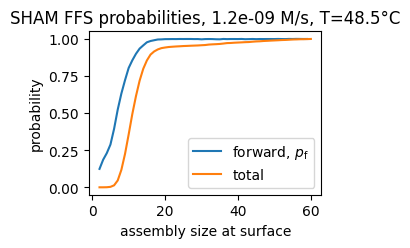
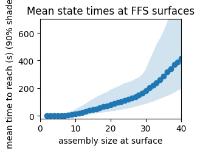
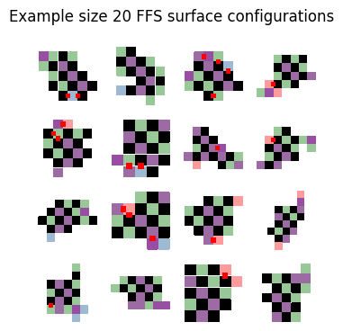
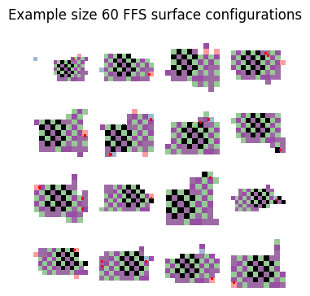
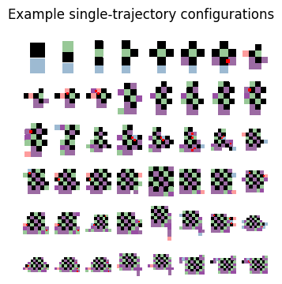
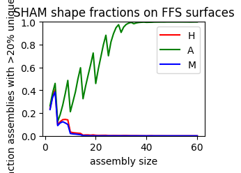
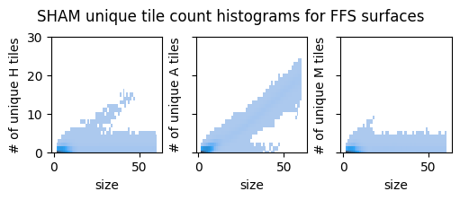

FFS nucleation rate calculation examples for "Pattern recognition in the nucleation kinetics of non-equilibrium self-assembly".¶
This notebook shows nucleation rate calculations for Evans, C. G., O’Brien, J., Winfree, E. & Murugan, A. Pattern recognition in the nucleation kinetics of non-equilibrium self-assembly. Nature 625, 500–507 (2024). It uses sequence-dependent binding energies, using Alhambra for the tileset definition and integration with rgrow.
import seaborn as sns
import numpy as np
import matplotlib.pyplot as plt
import alhambra
import polars as pl
import re
ts_base = alhambra.TileSet.from_file("evans2024-pattern-recognition-alhambra.json")
ts_base.params['concentration'] = 50 # in nM, base concentration for tiles.
ts_base.params['alpha'] = -7.1 # alpha parameter for kTAM; this is what we use in SHAM
ts_base.params['glue-handling'] = 'orthogonal' # don't model interactions between non-WC pairs
#ts_base.params['glue-handling'] = 'full' # model interactions between non-WC pairs using Stickydesign energetics.
ts_base.params['fission'] = 'keep-weighted' # when structures split, randomly keep one, weighting by size
ts_base.params['model'] = 'KTAM' # use the kTAM
ts_base.params['chunk-handling'] = 'detach' # allow dimers to detach from the structure
ts_base.params['chunk-size'] = 'dimer'
ts_base.params['temperature'] = 48.5
An "A flag" pattern¶
ts = ts_base.copy()
for tn in [111, 105, 159, 417, 228, 211, 193, 182, 180, 654, 425, 84]:
ts.tiles[tn].stoic = 10.0
ts.tiles[tn].color = 'black'
rts = ts.to_rgrow()
rts.size = (16, 16)
rts.canvas_type = "Periodic"
res = rts.run_ffs(
min_nuc_rate=1e-15,
var_per_mean2=1e-5,
min_cutoff_size=60,
min_configs=5000,
target_size=150,
keep_configs=True,
)
sys = rts.create_system()
res.nucleation_rate # in M/s
1.045108112575489e-09
sd = res.surfaces_dataframe()
sd
shape: (59, 5)
| level | n_configs | n_trials | target_size | p_r |
|---|---|---|---|---|
| u64 | u64 | u64 | u64 | f64 |
| 0 | 87602 | 87602 | 2 | 1.0 |
| 1 | 87602 | 706549 | 3 | 0.123986 |
| 2 | 81417 | 438123 | 4 | 0.185831 |
| 3 | 76982 | 334441 | 5 | 0.230181 |
| 4 | 71204 | 247266 | 6 | 0.287965 |
| … | … | … | … | … |
| 54 | 5000 | 5005 | 56 | 0.999001 |
| 55 | 5000 | 5002 | 57 | 0.9996 |
| 56 | 5000 | 5003 | 58 | 0.9994 |
| 57 | 5000 | 5005 | 59 | 0.999001 |
| 58 | 5000 | 5004 | 60 | 0.999201 |
cd = res.configs_dataframe()
cd
shape: (858_561, 10)
| surface_index | config_index | size | time | previous_config | canvas | min_i | min_j | shape_i | shape_j |
|---|---|---|---|---|---|---|---|---|---|
| u64 | u64 | u32 | f64 | u64 | list[u32] | u64 | u64 | u64 | u64 |
| 0 | 0 | 2 | 0.0 | 228 | [204, 228] | 8 | 8 | 2 | 1 |
| 0 | 1 | 2 | 0.0 | 160 | [621, 160] | 8 | 8 | 2 | 1 |
| 0 | 2 | 2 | 0.0 | 106 | [105, 106] | 8 | 8 | 1 | 2 |
| 0 | 3 | 2 | 0.0 | 181 | [181, 86] | 8 | 8 | 1 | 2 |
| 0 | 4 | 2 | 0.0 | 86 | [86, 655] | 8 | 8 | 1 | 2 |
| … | … | … | … | … | … | … | … | … | … |
| 58 | 4995 | 60 | 717.674024 | 4052 | [771, 0, … 0] | 3 | 0 | 9 | 16 |
| 58 | 4996 | 60 | 1253.279588 | 1594 | [0, 0, … 0] | 5 | 5 | 8 | 11 |
| 58 | 4997 | 60 | 1812.343158 | 3778 | [0, 0, … 682] | 7 | 0 | 7 | 16 |
| 58 | 4998 | 60 | 1145.334458 | 3024 | [0, 0, … 0] | 5 | 4 | 7 | 11 |
| 58 | 4999 | 60 | 967.093985 | 1385 | [108, 620, … 681] | 4 | 4 | 6 | 11 |
fig, ax = plt.subplots(figsize=(3, 2.12))
ax.plot(
sd.get_column('target_size'),
sd.get_column('p_r').shift(-1),
label='forward, $p_\\text{f}$'
)
ax.plot(
sd.get_column('target_size'),
sd.get_column('p_r').to_numpy()[::-1].cumprod()[::-1],
label='total'
)
ax.set_xlabel('assembly size at surface')
ax.set_ylabel('probability')
ax.set_title(f"SHAM FFS probabilities, {res.nucleation_rate:2.1e} M/s, T=48.5°C")
ax.legend()
<matplotlib.legend.Legend at 0x7fda94ffa4e0>

q = cd.group_by("size", maintain_order=True).agg(
pl.col("time").quantile(0.5).alias("time_median"),
pl.col("time").quantile(0.95).alias("time_95"),
pl.col("time").quantile(0.05).alias("time_05"),
)
fig, ax = plt.subplots(figsize=(3, 2.12))#constrained_layout=True)
ax.plot(q["size"], q["time_median"], "o-")
ax.fill_between(q["size"], q["time_05"], q["time_95"], alpha=0.2)
ax.set_xlabel("assembly size at surface")
ax.set_ylabel("mean time to reach (s) (90% shaded)")
ax.set_xlim(0, 40)
ax.set_ylim(-20, 700)
ax.set_title("Mean state times at FFS surfaces")
Text(0.5, 1.0, 'Mean state times at FFS surfaces')

fig, axs = plt.subplots(4, 4, figsize=(4, 4))
cf = cd.filter(pl.col("size") == 20)
for i, ax in enumerate(axs.flat):
canvas = cf[i, "canvas"].to_numpy().reshape(cf[i, "shape_i"], cf[i, "shape_j"])
v = np.zeros((canvas.shape[0]+2, canvas.shape[1]+2), dtype=np.uint32)
v[1:-1, 1:-1] = canvas
state = rts._to_rg_tileset().create_state_from_canvas(v)
ax = sys.plot_canvas(state, annotate_mismatches=True, ax=ax)
xl = ax.get_xlim()
ax.set_xlim(xl[0]+1, xl[1]-1)
yl = ax.get_ylim()
ax.set_ylim(yl[0]-1, yl[1]+1)
ax.set_axis_off()
#ax.set_title(f"size {cd[g+i, 'size']}; time {cd[g+i, 'time']} s")
fig.suptitle("Example size 20 FFS surface configurations")
Text(0.5, 0.98, 'Example size 20 FFS surface configurations')

fig, axs = plt.subplots(4, 4, figsize=(4, 4))
cf = cd.filter(pl.col("size") == 60)
for i, ax in enumerate(axs.flat):
canvas = cf[i, "canvas"].to_numpy().reshape(cf[i, "shape_i"], cf[i, "shape_j"])
v = np.zeros((canvas.shape[0]+2, canvas.shape[1]+2), dtype=np.uint32)
v[1:-1, 1:-1] = canvas
state = rts._to_rg_tileset().create_state_from_canvas(v)
ax = sys.plot_canvas(state, annotate_mismatches=True, ax=ax)
xl = ax.get_xlim()
ax.set_xlim(xl[0]+1, xl[1]-1)
yl = ax.get_ylim()
ax.set_ylim(yl[0]-1, yl[1]+1)
ax.set_axis_off()
#ax.set_title(f"size {cd[g+i, 'size']}; time {cd[g+i, 'time']} s")
fig.suptitle("Example size 60 FFS surface configurations")
Text(0.5, 0.98, 'Example size 60 FFS surface configurations')

recs = []
c = cd[-1]
while not c.is_empty():
recs.append(c)
c = cd.filter((pl.col("surface_index") == c['surface_index'][0]-1) & (pl.col("config_index") == c['previous_config'][0]))
traj = pl.concat(recs[::-1])
traj
shape: (59, 10)
| surface_index | config_index | size | time | previous_config | canvas | min_i | min_j | shape_i | shape_j |
|---|---|---|---|---|---|---|---|---|---|
| u64 | u64 | u32 | f64 | u64 | list[u32] | u64 | u64 | u64 | u64 |
| 0 | 20955 | 2 | 0.0 | 823 | [426, 823] | 8 | 8 | 2 | 1 |
| 1 | 20955 | 3 | 0.938474 | 20955 | [654, 426, 823] | 7 | 8 | 3 | 1 |
| 2 | 37408 | 4 | 1.1502 | 20955 | [212, 654, … 823] | 6 | 8 | 4 | 1 |
| 3 | 50216 | 5 | 1.225129 | 37408 | [212, 0, … 0] | 6 | 8 | 4 | 2 |
| 4 | 7147 | 6 | 1.509427 | 50216 | [0, 212, … 0] | 6 | 7 | 4 | 3 |
| … | … | … | … | … | … | … | … | … | … |
| 54 | 795 | 56 | 882.337238 | 3295 | [0, 0, … 0] | 3 | 4 | 7 | 10 |
| 55 | 1238 | 57 | 882.955863 | 795 | [0, 0, … 0] | 2 | 4 | 8 | 10 |
| 56 | 3309 | 58 | 944.720203 | 1238 | [0, 0, … 0] | 3 | 4 | 8 | 11 |
| 57 | 1385 | 59 | 966.878334 | 3309 | [108, 620, … 0] | 4 | 4 | 7 | 11 |
| 58 | 4999 | 60 | 967.093985 | 1385 | [108, 620, … 681] | 4 | 4 | 6 | 11 |
fig, axs = plt.subplots(6, 8, figsize=(4, 4))
for z, ax in zip(traj.iter_rows(named=True), axs.flat):
canvas = np.array(z["canvas"], dtype=np.uint32).reshape(z["shape_i"], z["shape_j"])
v = np.zeros((canvas.shape[0]+2, canvas.shape[1]+2), dtype=np.uint32)
v[1:-1, 1:-1] = canvas
state = rts._to_rg_tileset().create_state_from_canvas(v)
ax = sys.plot_canvas(state, annotate_mismatches=True, ax=ax)
xl = ax.get_xlim()
ax.set_xlim(xl[0]+1, xl[1]-1)
yl = ax.get_ylim()
ax.set_ylim(yl[0]-1, yl[1]+1)
ax.set_axis_off()
#ax.set_title(f"size {cd[g+i, 'size']}; time {cd[g+i, 'time']} s")
fig.suptitle("Example single-trajectory configurations")
# fig.savefig(f'{PREFIX}-sham-example-trajectory.pdf')
# canvas = cd[g, "canvas"].to_numpy().reshape(cd[g, "shape_i"], cd[g, "shape_j"])
# v = np.zeros((canvas.shape[0]+2, canvas.shape[1]+2), dtype=np.uint32)
# v[1:-1, 1:-1] = canvas
# state = rts._to_rg_tileset().create_state_from_canvas(v)
# ax = sys.plot_canvas(state, annotate_tiles=True, annotate_mismatches=True, ax=ax)
# ax.set_axis_off()
# # ax.set_ylim( 5.5, 0.5)
# # ax.set_xlim(0.5, 7.5)
# ax.set_title("SHAM example state: size 19; time 207 s")
# # ax.get_figure().savefig('sham-example-state.pdf')
Text(0.5, 0.98, 'Example single-trajectory configurations')

uh = np.array([re.match('[H]', x) is not None for x in sys.tile_names])
ua = np.array([re.match('[A]', x) is not None for x in sys.tile_names])
um = np.array([re.match('[M]', x) is not None for x in sys.tile_names])
cd = cd.with_columns(
n_h=pl.col("canvas").map_elements(lambda x: uh[x].sum(), return_dtype=pl.Float64),
n_a=pl.col("canvas").map_elements(lambda x: ua[x].sum(), return_dtype=pl.Float64),
n_m=pl.col("canvas").map_elements(lambda x: um[x].sum(), return_dtype=pl.Float64),
).with_columns(
p_h=pl.col("n_h") / pl.col("size"),
p_a=pl.col("n_a") / pl.col("size"),
p_m=pl.col("n_m") / pl.col("size"),
)
mm = cd.group_by("size", maintain_order=True).agg(
h = (pl.col("p_h") > 0.2).mean(),
a = (pl.col("p_a") > 0.2).mean(),
m = (pl.col("p_m") > 0.2).mean()
)
fig, ax = plt.subplots(figsize=(3, 2.12))
ax.plot(mm['size'], mm['h'], color='red', label='H')
ax.plot(mm['size'], mm['a'], color='green', label='A')
ax.plot(mm['size'], mm['m'], color='blue', label='M')
ax.set_ylim(0, 1)
ax.set_ylabel("fraction assemblies with >20% unique tiles")
ax.set_xlabel("assembly size")
ax.set_title("SHAM shape fractions on FFS surfaces")
ax.legend()
<matplotlib.legend.Legend at 0x7fda580962a0>

s = "a"
fig, axs = plt.subplots(1, 3, figsize=(5, 2.12), constrained_layout=True)
for s, ax in zip(['h', 'a', 'm'], axs):
sns.histplot(x=cd['size'], y=cd[f'n_{s}'], discrete=True, ax=ax)# , bins=50) # , height=2)
ax.set_ylabel(f"# of unique {s.upper()} tiles")
if s != 'h':
ax.set_yticklabels([])
ax.set_ylim(0, 30)
fig.suptitle("SHAM unique tile count histograms for FFS surfaces")
# fig.savefig(f'{PREFIX}-sham-unique-tile-histograms.pdf')
#sns.histplot(x=cd['size'], y=cd['n_h'], discrete=True)# , bins=50) # , height=2)
#sns.histplot(x=cd['size'], y=cd['n_m'], discrete=True)# , bins=50) # , height=2)
Text(0.5, 0.98, 'SHAM unique tile count histograms for FFS surfaces')
